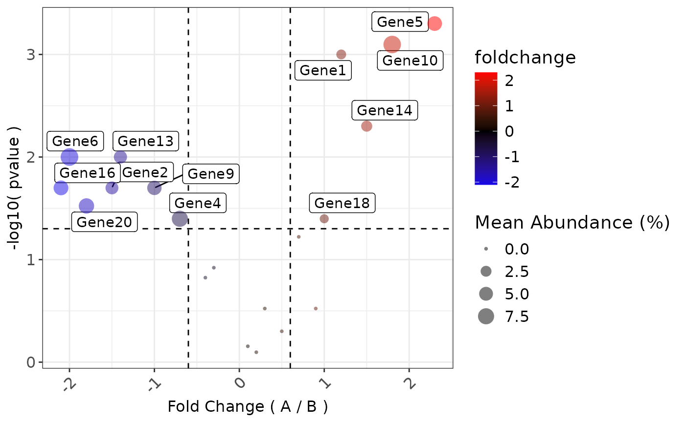

Creates a Volcano plot from the output of foldchange method from class omics, it plots the foldchanges on the x-axis,
log10 trasnformed p-values on the y-axis and adjusts the scatter size based on the percentage abundance of the features.
This function is built into the class omics with method DFE() and inherited by other omics classes, such as;
metagenomics and proteomics.
Usage
volcano_plot(
data,
logfold_col,
pvalue_col,
feature_rank,
abundance_col,
pvalue.threshold = 0.05,
logfold.threshold = 0.6,
abundance.threshold = 0.01,
label_A = "A",
label_B = "B"
)Arguments
- data
A data.table.
- logfold_col
A column name of a continuous variable.
- pvalue_col
A column name of a continuous variable.
- feature_rank
A character variable of the feature column.
- abundance_col
A column name of a continuous variable.
- pvalue.threshold
A P-value threshold (default: 0.05).
- logfold.threshold
A Log2(A/B) Fold Change threshold (default: 0.6).
- abundance.threshold
An abundance threshold (default: 0.01).
- label_A
A character to describe condition A.
- label_B
A character to describe condition B.
Value
A ggplot2 object to be further modified.
Examples
library(data.table)
library(ggplot2)
# Create mock data frame
mock_volcano_data <- data.table(
# Feature names (feature_rank)
Feature = paste0("Gene", 1:20),
# Log2 fold changes (X)
log2FC = c(1.2, -1.5, 0.3, -0.7, 2.3,
-2.0, 0.1, 0.5, -1.0, 1.8,
-0.4, 0.7, -1.4, 1.5, 0.9,
-2.1, 0.2, 1.0, -0.3, -1.8),
# P-values (Y)
pvalue = c(0.001, 0.02, 0.3, 0.04, 0.0005,
0.01, 0.7, 0.5, 0.02, 0.0008,
0.15, 0.06, 0.01, 0.005, 0.3,
0.02, 0.8, 0.04, 0.12, 0.03),
# Mean (relative) abundance for point sizing
rel_abun = runif(20, 0.01, 0.1)
)
volcano_plot(
data = mock_volcano_data,
logfold_col = "log2FC",
pvalue_col = "pvalue",
abundance_col = "rel_abun",
feature_rank = "Feature",
)
